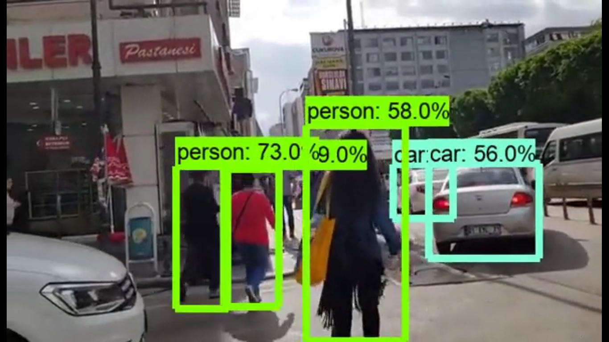

Object
Detection
This app don't have a user interface its runs as a script.

This app don't have a user interface its runs as a script.
It can detect like things as person, car or bag and draws a square around the object